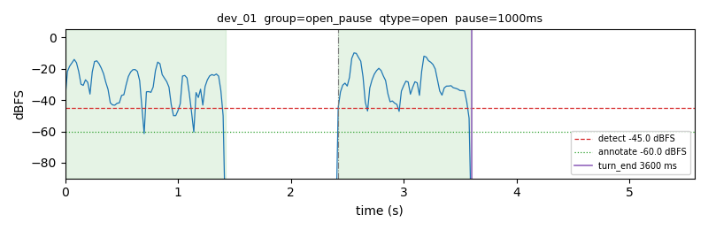
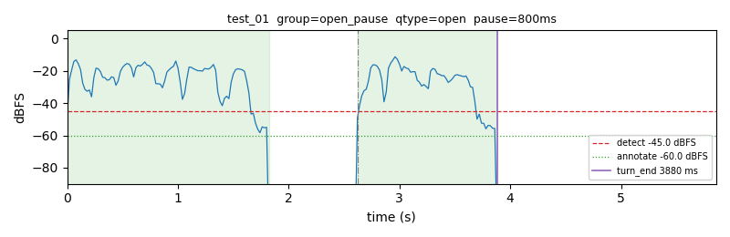
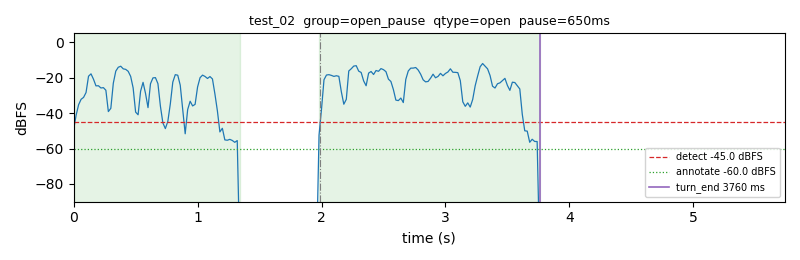
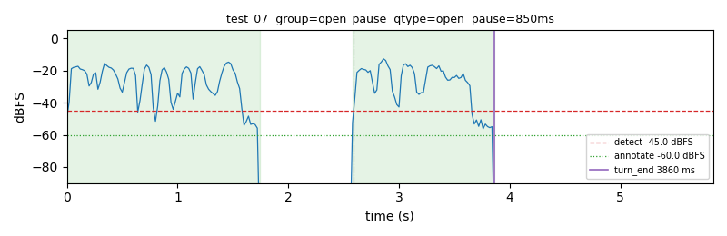
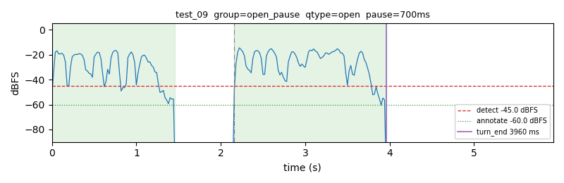
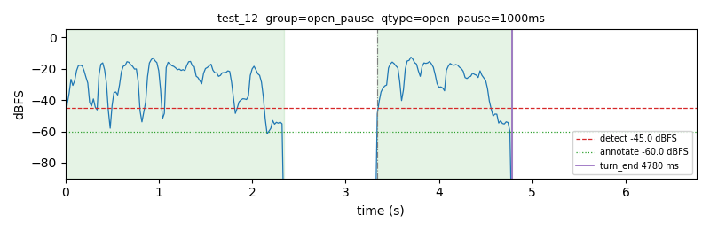
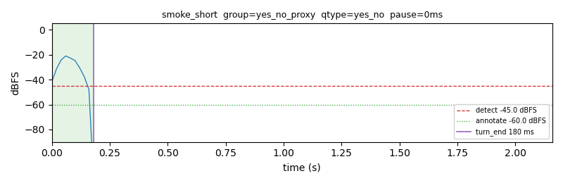
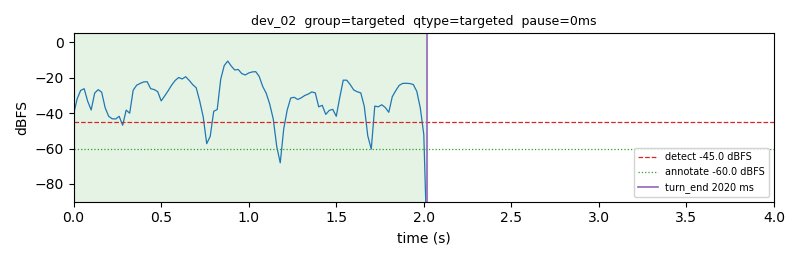
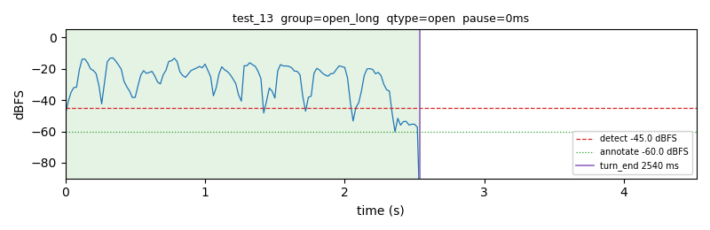
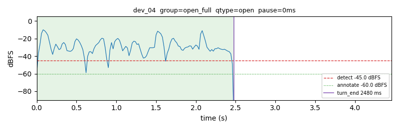

results/listen/听审表.md
python -m b_module verify <case...> --note "听审 姓名 日期"
open_pause
open
3600 ms
5600 ms
1000
-120.0 dBFS
-34.0 dBFS

3880 ms
5880 ms
800
-53.8 dBFS

3760 ms
5770 ms
650
640
-50.2 dBFS

3860 ms
5870 ms
850
840
-53.3 dBFS

3960 ms
5960 ms
700
-51.5 dBFS

4780 ms
6780 ms
-53.9 dBFS

yes_no_proxy
yes_no
180 ms
2180 ms
0
-22.7 dBFS

targeted
2020 ms
4020 ms
-23.3 dBFS

open_long
2540 ms
4540 ms
-53.6 dBFS

open_full
2480 ms
4480 ms
-33.2 dBFS
